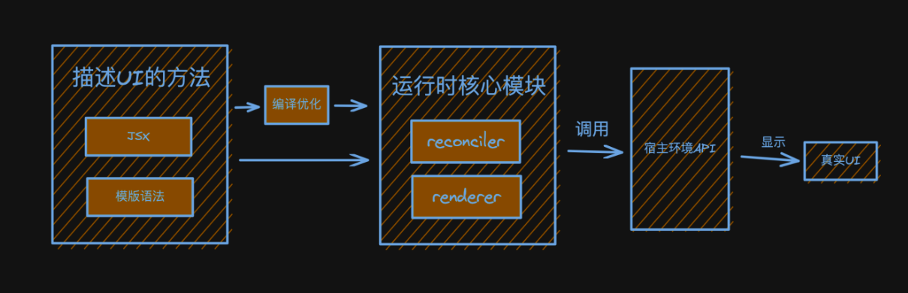

第三课：实现Reconciler架构
reconciler是React核心逻辑所在的模块，中文名叫协调器。协调（reconcile）就是diff算法的意思。
reconciler有什么用？
jQuery工作原理（过程驱动）：

前端框架结构与工作原理（状态驱动）：

-
消费JSX -
没有编译优化（Vue Solid 有编译优化） -
纯运行时的前端框架 -
开放通用API供不同宿主环境使用
核心模块消费JSX的过程
核心模块操作的数据结构是？
当前已知的数据结构：ReactElement（JSX转换
playground）
ReactElement如果作为核心模块操作的数据结构，存在的问题：
-
无法表达节点之间的关系 -
字段有限，不好拓展（比如：无法表达状态）
所以，需要一种新的数据结构，他的特点：
-
介于 ReactElement与真实UI节点之间 -
能够表达节点之间的关系 -
方便拓展（不仅作为数据存储单元，也能作为工作单元）
这就是FiberNode（虚拟DOM在React中的实现）
当前我们了解的节点类型：
-
JSX -
ReactElement -
FiberNode -
DOMElement
reconciler的工作方式
对于同一个节点，比较其ReactElement与fiberNode，生成子fiberNode。并根据比较的结果生成不同标记（插入、删除、移动......），对应不同宿主环境API的执行。

比如，挂载<div></div>：
// React Element <div></div>
jsx("div")
// 对应fiberNode
null
// 生成子fiberNode
// 对应标记
Placement
将<div></div>更新为<p></p>：
// React Element <p></p>
jsx("p")
// 对应fiberNode
FiberNode {type: 'div'}
// 生成子fiberNode
// 对应标记
Deletion Placement
当所有ReactElement比较完后，会生成一棵fiberNode树，一共会存在两棵fiberNode树：
-
current：与视图中真实UI对应的 fiberNode树 -
workInProgress：触发更新后，正在 reconciler中计算的fiberNode树
JSX消费的顺序
以DFS（深度优先遍历）的顺序遍历ReactElement，这意味着：
-
如果有子节点，遍历子节点 -
如果没有子节点，遍历兄弟节点 例子：
<Card>
<h3>你好</h3>
<p>Big-React</p>
</Card>
这是个递归的过程，存在递、归两个阶段：
-
递：对应 beginWork -
归：对应 completeWork